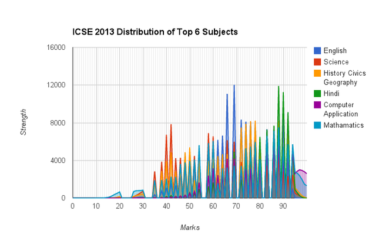
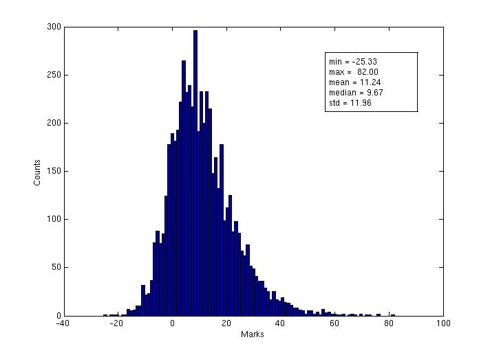

The trace of grace
An undergraduate student at Cornell University has downloaded the complete result of the ICSE and CBSE exams for the year 2013. The result, hosted on http://www.cisce.ndtv.com/ , could be downloaded in its entirety because the data was stored in a manner that is easily revealed by studying the source code of the web page. This exploit, if it can be so called, raises concerns about privacy of information, the impropriety of a private news channel hosting the results of a nationwide public exam, and most seriously, the allegation of marks tampering.
Having access to scorecards of all the candidates who appeared in the examination Debarghya Das, the Cornell student, computed the histogram of the exam scores for each subject and noticed an anomaly : some scores would never occur in the histograms. Specifically, the scores 36, 37, 39, 41, 43, 45, 47, 49, 51, 53, 55, 56, 57, 59, 61, 63, 65, 67, 68, 70, 71, 73, 75, 77, 79, 81, 82, 84, 85, 87, 89, 91, and 93 were never obtained by any of the candidates in any of the subjects! A histogram with such holes would already be highly improbable for any one subject, but what takes it to the realms of impossibility is that such histograms appear for all subjects! Here is the histogram, taken from Debarghya Das’s blog.

What is the probability that such histograms can be obtained by chance ? Intuitively, it appears to be very low, but it is quite easy to make a quantitative estimate by assuming the simplest form for the probability of the score distribution, namely that each score is equally likely. In Bayesian terms this would mean an uniform prior on the scores, equal to 1/100. Assuming that the candidates are all identical (in terms of preparation, ability and so on) and independent (they do not copy from each other and so on) the probability that N_j candidates get a score of j can be taken to be (fittingly for what appears to be a fishy matter) Poisson distributed
\[ P(N_j) = \frac{\mu_j^{N_j} e^{-\mu_j}}{N_j !} \]
where \muj = \langle Nj \rangle is the expected number of candidates with score j. For an exam with 100, 000 candidates the expected number in each bin is 1000. We now want the probability that there is a “hole” in the histogram, that is, there are no candidates with a score of j. This probability is
\[ \mbox{Prob(No candidates scored j}) = P(N_j = 0) = e^{-\mu_j} = e^{-1000} \approx 0 \]
The probability that there will be a hole in any one of the subject histograms is approximately 1 in 10 followed by a 1000 zeros, infinitesimally small. It is then entirely improbable that there will be holes at identical places for all the subject histograms. This can only point to some unspecified form of “data manipulation”. Finally, below is an example of a histogram from a nation wide multiple choice exam, taken by approximately 10,000 candidates. The candidates mark their answers on a machine-readable sheet and the final scores are generated without human intervention. Notice the complete absence of holes away from the tails of the histogram.
noholes
Histogram obtained in a national exam, taken by approximately 10,000 candidates, where scores are generated without human intervention.

[Edit on 09.06. 13 : The Learning Point website has much more data on odd looking histograms from the board exams. Thanks to Seema Singh for this. ]